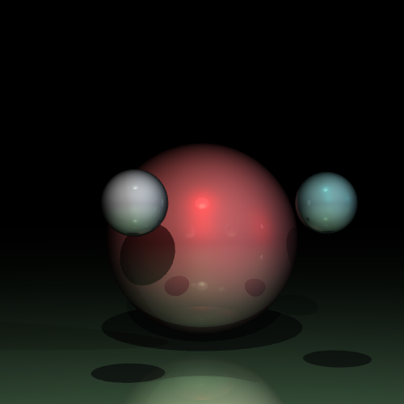
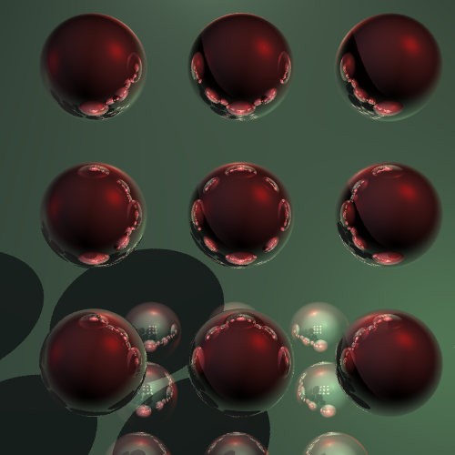

Raytracer
Posted:
The last couple of days I have been working on a raytracer in JavaScript. Years ago I wrote one in C to learn out to do OO in C, and now I am doing it in JavaScript to see what is possible.
The first image is just a test image with several spheres, lights, and a plane. The lights are just spheres, and can see the main light pretty clearly in the reflection.

This image has a lot more going on. There are nine reflective spheres, and the plane behind them is sloped away so we can see the reflections off of it.

I spent a lot of time forgetting vectors and planes, so it was a good re-learning experience. The code isn't in shape to post yet, and it is still too slow yet.
The second image takes about a minute on my machine. In defense of the code, each pixel found tracing four rays (to anti-alias the edges), so this should get a lot faster when I make it smarter about that.